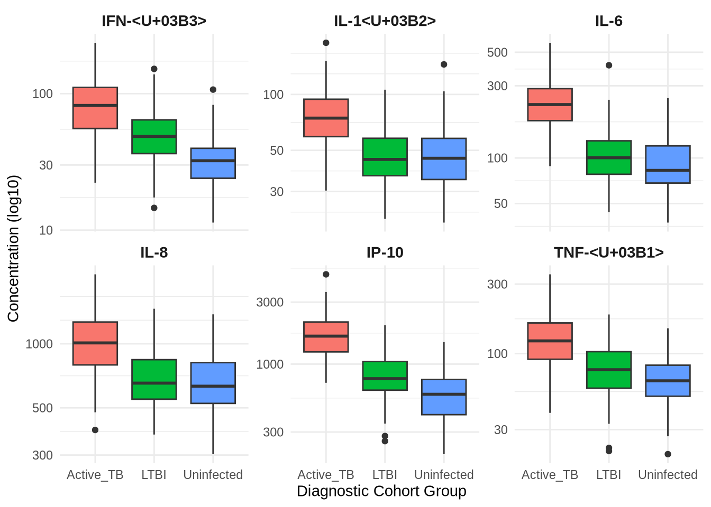

| Dataset Column Index Reference | |
| Index | Column Name |
|---|---|
| 1 | subject_id |
| 2 | group |
| 3 | age_years |
| 4 | sex |
| 5 | hiv_status |
| 6 | bal_volume_ml |
| 7 | ip10_bal_pg_ml |
| 8 | il6_bal_pg_ml |
| 9 | il1b_bal_pg_ml |
| 10 | ifng_bal_pg_ml |
| 11 | tnfa_bal_pg_ml |
| 12 | il8_bal_pg_ml |
Compartmental TB Diagnostics: A Simulated BAL Cytokine cohort
Note
All patient records in the accompanying comma-separated-value (csv) are entirely simulated. No real patient data, real assay measurements, or identifiable information were used at any stage. Concentrations, correlation structure, and group effects were generated computationally to be broadly consistent with published patterns in the TB immunology literature (cited below), not copied or fitted from any specific dataset. This project is intended purely as a methods/skills demonstration.
Introduction
This dataset represents a computationally simulated cohort designed to model compartmental immune responses in human pulmonary Tuberculosis (TB). Most host-biomarker TB research relies on peripheral blood samples, which are minimally invasive but primarily reflect systemic immunity rather than local site-of-infection responses. In contrast, Bronchoalveolar lavage (BAL) samples the lung compartment directly, offering a distinct and less thoroughly mined immune signature characterized by heightened local Type 1 helper T cells (Th1) activity.
Analytical and Clinical Objective
The primary objective of this project is to build and evaluate a 3-class machine learning classifier (Active TB vs. Latent Tuberculosis Infection (LTBI) vs. Uninfected) using the multiplex cytokine panel. Model performance will be bench-marked directly against the World Health Organization (WHO) Target Product Profile (TPP) for a TB triage test, which requires a minimum acceptable performance threshold of \(≥90%\) sensitivity and \(≥70\%\) specificity.
Library import
This project implements a multilingual data science workflow, utilizing R for data engineering and statistical analysis, and Python for predictive modeling. Data ingestion, programmatic cleaning, and parsing are executed using the R tidyverse core ecosystem, specifically dplyr (Wickham et al., 2026), tidyr (Wickham, Vaughan and Girlich, 2026), stringr (Wickham, 2025), and janitor (Firke, 2024). Descriptive clinical tables and baseline group statistics are compiled using the R packages gtsummary (Sjoberg et al., 2021) and broom (Robinson et al., n.d.), while exploratory data visualization and dimensional reduction are conducted via ggplot2 (Wickham, 2016) and factoextra (Kassambara and Mundt, 2026).
If the analytical scope expands to predictive modeling, the workflow transitions to Python via the reticulate (Ushey, Allaire and Tang, 2025) interface. This pipeline leverages Python’s machine learning libraries, including scikit-learn for cross-validation and evaluation metrics, xgboost for gradient-boosted decision tree architecture, and shap for model feature attribution.
Data Ingestion & Setup
The analytical workflow begins by establishing a reproducible environment and importing the simulated clinical dataset. The cohort data, stored in a flat-file csv format (bal_cytokine_tb_cohort.csv), is read into the R session using the optimized read_csv() parsing engine from the readr package. This approach automatically detects column types and guarantees consistent data frame structures for downstream operations.
The dataset comprises 12 columns containing demographic covariates, clinical statuses, and BAL biomarker measurements.
| Characteristic | Total Cohort1 | Active_TB N = 1501 |
LTBI N = 1501 |
Uninfected N = 1201 |
|---|---|---|---|---|
| Age (Years) | 35 (27, 43) | 33 (26, 41) | 37 (31, 45) | 33 (25, 43) |
| Biological Sex | ||||
| Female | 221 (53%) | 74 (49%) | 75 (50%) | 72 (60%) |
| Male | 199 (47%) | 76 (51%) | 75 (50%) | 48 (40%) |
| IP-10 | 880 (623, 1,458) | 1,642 (1,240, 2,114) | 773 (626, 1,047) | 586 (407, 763) |
| IL-6 | 126 (83, 200) | 225 (176, 288) | 100 (78, 130) | 83 (68, 121) |
| IL-1<U+03B2> | 53 (40, 72) | 75 (59, 95) | 45 (36, 58) | 45 (35, 58) |
| INF-<U+03B3> | 50 (34, 79) | 82 (55, 111) | 49 (36, 64) | 32 (24, 40) |
| TNF-<U+03B1> | 84 (60, 118) | 122 (91, 163) | 77 (57, 104) | 65 (51, 83) |
| IL-8 | 745 (592, 1,013) | 1,009 (796, 1,266) | 653 (548, 843) | 632 (524, 816) |
| 1 Median (Q1, Q3); n (%) | ||||
A baseline summary of the cohort across clinical groups demonstrates balanced demographic distributions alongside distinctly elevated local immune profiles in the active disease state. Pro-inflammatory cytokines and chemokines—specifically IP-10, IL-6, and IL-8—show marked concentrations within the BAL fluid of the Active TB group compared to both the LTBI and Uninfected control cohorts.
| Variable | Missing Values (Counts) | Missing Values (%) |
|---|---|---|
| subject_id | 0 | 0 |
| group | 0 | 0 |
| age_years | 0 | 0 |
| sex | 0 | 0 |
| hiv_status | 0 | 0 |
| bal_volume_ml | 0 | 0 |
| cytokine | 0 | 0 |
| concentration | 0 | 0 |
Table 3 displays an analysis of missingness patterns across the dataset, demonstrating that the data is completely integrated with no omissions. For every listed variable—including identifiers like subject_id, clinical or demographic factors like group, age_years, sex, and hiv_status, as well as laboratory measures like bal_volume_ml, cytokine, and concentration—both the missing value counts and their corresponding percentages are exactly zero. This confirms a fully populated dataset, ensuring maximum statistical reliability for subsequent analytics without requiring imputation techniques.

To visualize the variations in biomarker concentrations across the diagnostic groups, we plot the log10-transformed concentrations of the six BAL cytokines (Figure 1). Active TB patients display distinct up-regulation across all measured markers—particularly IFN-γ, IL-1β, and IP-10, separating them from both the latent infection and uninfected control groups.
Glossary
- BAL
- Bronchoalveolar lavage
- LTBI
- Latent Tuberculosis Infection
- TB
- Tuberculosis
- TPP
- Target Product Profile
- Th1
- Type 1 helper T cells
- WHO
- World Health Organization
- csv
- comma-separated-value
References
Firke, S., 2024. Janitor: Simple tools for examining and cleaning dirty data. [online] Available at: <https://github.com/sfirke/janitor>.
Kassambara, A. and Mundt, F., 2026. Factoextra: Extract and visualize the results of multivariate data analyses. [online] Available at: <https://CRAN.R-project.org/package=factoextra>.
Robinson, D., Hayes, A., Couch, S. and Hvitfeldt, E., n.d. Broom: Convert statistical objects into tidy tibbles. [online] Available at: <https://github.com/tidymodels/broom>.
Sjoberg, D.D., Whiting, K., Curry, M., Lavery, J.A. and Larmarange, J., 2021. Reproducible summary tables with the gtsummary package. The R Journal, [online] 13, pp.570–580. https://doi.org/10.32614/RJ-2021-053.
Ushey, K., Allaire, J. and Tang, Y., 2025. Reticulate: Interface to ’python’. [online] Available at: <https://rstudio.github.io/reticulate/>.
Wickham, H., 2016. ggplot2: Elegant graphics for data analysis. [online] Springer-Verlag New York. Available at: <https://ggplot2.tidyverse.org>.
Wickham, H., 2025. Stringr: Simple, consistent wrappers for common string operations. [online] Available at: <https://stringr.tidyverse.org>.
Wickham, H., François, R., Henry, L., Müller, K. and Vaughan, D., 2026. Dplyr: A grammar of data manipulation. [online] Available at: <https://dplyr.tidyverse.org>.
Wickham, H., Vaughan, D. and Girlich, M., 2026. Tidyr: Tidy messy data. [online] Available at: <https://tidyr.tidyverse.org>.
Reuse
CC BY-NC-SA 4.0(View License)
Citation
BibTeX citation:
@online{allies,
author = {Allies, Devon},
title = {Compartmental {TB} {Diagnostics:} {A} {Simulated} {BAL}
{Cytokine} Cohort},
langid = {en}
}
For attribution, please cite this work as:
Allies, D., n.d. Compartmental TB Diagnostics: A Simulated BAL
Cytokine cohort.